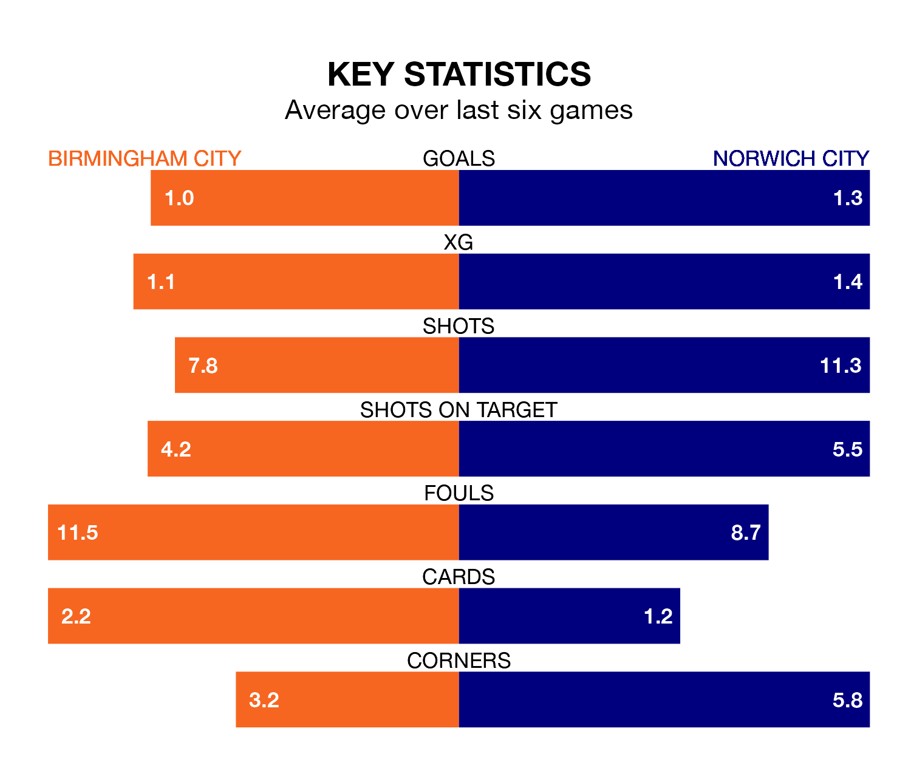

Norwich City face Birmingham City on Saturday seeking to protect their long unbeaten run in EFL Championship.
The Canaries are unbeaten in five, with two wins and three draws, ahead of the 12.30pm kick-off.
They face a Birmingham team who have won one and drawn two over the same number of games.
With 79 goals in 45 games so far this season, Norwich are scoring more than average in the league with 1.8 goals per game. But they are conceding more than average too, letting in 63 goals at a rate of 1.4 per game.
Birmingham, meanwhile, are below average scorers, with 1.1 goals per game, compared to a league average of 1.3. They have conceded 1.4 goals per game.
Birmingham City are 22nd in the table after 45 games, of which they have won 12 and drawn 11, earning 47 points.
Norwich City are 17 places ahead of the Blues in fifth, with 21 wins and 10 draws putting them on 73 points.
In the last 10 years, Birmingham and Norwich have played each other on 14 occasions. Birmingham won one of them, Norwich nine, and they drew four times.
On average, the Blues scored 0.9 goals and the Canaries 1.8 in those matches.
Their last meeting was on September 30, when Norwich won 2-0 at home.
In Joshua Sargent, the Canaries have one of the league's sharpest shooters so far this season. He has notched 16 goals in 25 appearances, to sit sixth in the scoring charts.
His goal rate of one every 111 minutes is much quicker than that of Jay Stansfield, the home side's top scorer with a goal every 273 minutes, and a total of 12 goals in 42 games.
Birmingham's last match was on Saturday, a 1-1 draw against Huddersfield Town, with Koji Miyoshi getting the goal for the Blues.
Norwich drew 2-2 with Swansea City last time out, also on Saturday, with Gabriel Sara and Sargent on the scoresheet.
Updated: 10:44 (UTC), 30/04/24